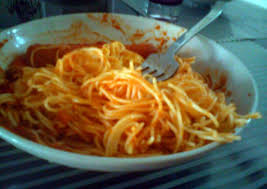

Poor Man Pasta

Description
This is the most basic spaghetti receipe you'll find.
It can barely be called pasta.
Ingredients
- Can of Tomato Sauce
- spaghetti noodles
- Salt
- 1/2 lb of hamburger or sausage
- Garlic if you fancy
Steps
- Boil noodles
- Cook meat
- Add sauce
- Add salt or garlic until its edible